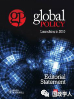

收录于合集

简 介
** 【作者】** 玛丽·卡尔多(Mary Kaldor)是伦敦政治经济学院(LSE)公民社会和人类安全研究部门的主任，也是由DFID基金资助的司法和安全研究项目的首席执行官。玛丽对军事技术、当代冲突、人道主义安全和全球公民社会的研究在学术界以及政府和国际机构的决策者中都具有影响力。她是欧洲核裁军运动的创始人之一。她还创立并共同主持了赫尔辛基公民大会，这是一个致力于和平、民主和人权的非政府组织。玛丽的著作包括《巴洛克式军火库》《新旧战争:全球时代的有组织暴力》《全球公民社会:战争的答案》。
** **【 编译 】****陈舜波
** **【 校对 】****蔡宇
** **【 审核 】****刘瑛琛
** **【 来源 】****Kaldor, M. (2010). Inconclusive Wars: Is Clausewitz Still Relevant in these Global Times? Global Policy, 1(3), 271–281. https://doi.org/10.1111/j.1758-5899.2010.00041.x
** 【期刊】** 《全球政策》是一本创新的跨学科杂志，汇集了世界一流的学者和领先的实践者，分析全球问题的公共和私人解决方案。它侧重于了解全球相关风险和集体行动问题；具有全球影响的政策挑战；以及关于全球风险和政策应对的相互竞争和趋同的论述。它还包括对其他国家和区域具有明确教训的政策案例研究；政策反应、政治和机构在全球层面如何相互关联；以及解释和制定这些领域政策所需的概念、理论和方法创新。2018年该杂志影响因子为1.197。

不确定的战争： **** 克劳塞维茨在全球时代仍适用吗？
Inconclusive Wars: Is Clausewitz Still Relevant in these Global Times?
内容提要
作者认为，克劳塞维茨关于战争趋于极端的核心主张不再适用于当代战争。相反，作者提出了一个替代命题，即战争往往是持久的和不确定的。本文基于克劳塞维茨方法，从重新定义战争的逻辑的角度出发推导出这一命题。而这一命题还显示了许多克劳塞维茨《战争论》中的核心原则的相关性。因此作者认为，当代战争是关于政治的，而不是政策的；战争是工具性和理性的，但不合理（在普遍价值观的意义上）；战争的动机是三位一体的，即理性、机会和激情，但不仅是三位一体的国家、将军和人民发起的，因为新的战争是由一系列非国家行为体进行的。克劳塞维茨所说的关于政治控制的重要性，指挥官的性格以及道德力量对国际战争的成败十分重要。
文章导读
克劳塞维茨的战争论对战争的解读和国际政策的制定有深远的影响。克劳塞维茨主要关注的是19世纪到20世纪欧洲战争中典型国家之间的战争冲突。然而，克劳塞维茨的理论在21世纪仍然具有相关性吗？或者我们对克劳塞维茨习惯性的尊重是否会影响我们在全球范围内应对当代冲突的能力？克劳塞维茨的思想是否可以应用于一个复杂多边主义取代绝对主义、以及民族国家间战争被非国家行为者的新型战争所取代的时代吗？
作者认为与19世纪和20世纪相比，当代的战争具有不同的内在本质，它是不确定的、持久的和蔓延的。因此，作者否定了战争论中“绝对战争”这一核心概念在当代战争中的适用性。在此基础上，作者认为克劳塞维茨对战争的理解可能会对以结束战争为目的的国际战略产生深远的反作用。此外，作者在克劳塞维茨的方法论上建立了后克劳塞维茨的战争论，并吸纳了克劳塞维茨的三位一体、政治的首要地位和战争工具化这些思想。
本文分为三个部分，首先，作者将探讨为什么绝对战争的概念在21世纪不再适用。其次，作者从三位一体的战争概念、理性的作用和政治的首要地位来解读当代战争。最后，作者对“新战争”的规范进行了探讨。
**1
**
超越绝对战争 ****
《战争论》中有两种战争：绝对战争（absolute war）和真实战争（real war）。 绝对战争是战争的内在本质，是抽象的概念。 真实战争 是指实际的历史经验。 克劳塞维茨的战争论聚焦在这两种战争的辩证关系上。克劳塞维茨认为暴力是手段， 战争的最终目的是 “强迫敌人屈服于我们的意志”，因此，必须解除敌人的武装。绝对战争必然会导致极端的倾向。虽然真实战争与绝对战争不同，这里的区别主要在于“摩擦”，也就是“广泛障碍”对战争的缓解作用，但都保持了绝对战争的内在倾向。作者认为，“新战争”是在意识到这“广泛障碍”之后的战争。 新型冲突被认为是 “小的”、“有限的”和“低强度的”，即使它不具备这些特性。对于所有参与战争的行为者而言，用武力打败敌人意味着战争没有止境。如果要用军事力量迫使一个对手履行我们的意愿，而这个对手是一支武装部队，那么这只能通过大规模歼灭来实现。而这种歼灭很可能是相互的，因此也是自我毁灭的。
但是战争，或者说战争的概念，还有其他功能：它可以刺激(或摧毁)经济；它可以丰富特定的利益；它可以帮助秩序(或破坏)国际关系；特别是，它能激发民族感情。
作者重新定义了战争这一概念，提出了所谓“新战争”。她认为战争可以是“意志的较量”（contest of will），但也可以是“ 共同事业 ”（mutual enterprise）。 共同事业 就意味着双方都需要对方来进行战争事业，因此战争往往是漫长而没有结果的。
首先，共同事业是政治的，它必须以政治术语为框架 。“新战争”目的不是推翻敌人，而是创造一种特定群体从中受益的战争状态。在新战争中，战斗是罕见的，暴力主要针对平民。事实上，“新战争”和克劳塞维茨所描述的战争之间的关键区别在于“新战争”避免直接作战。通过战争和暴力，武装分子可以从边缘的极端分子转变为主流的当权者。
**其次， “新战争”的互惠互利可能体现在经济上。**在当代，冲突可以有多种多样的资金来源，例如抢劫、绑架、设立检查站、毒品走私或人口贩运等犯罪活动，“征税”人道主义援助或动员海外侨民汇款等。人们往往不清楚这些活动是为战争提供资金，还是战争为进行这些活动提供了借口。
这种战争的内在倾向不是没有限度，而是没有终点。 以这种方式定义的战争，在战争中创造了共同的自我延续的利益，来重现政治特征和获得进一步的经济利益。此外，这些战争的双方既相互勾结又相互冲突。但是这种互惠的行为并不一定会导致一种绝对倾向的战争。它所做的往往是动员各方势力对交战各方进行支持。 暴力行动是正当的，新的战争战略不能导致决定性的结局。
作者认为，在后克劳塞维茨战争中，任何一方都没有兴趣参与战斗或挑战极限，接近极限并没有什么好处。
2
理性、政治和国家
三位一体是对“个性化的国家”的解读。理性、机会和情感——分别主要与国家、将军和人民有关，但“主要”或“更多”一词表明，它们并不完全与这些不同的组成部分或战争水平有关。
首先，作者认为，“政府是调解人”这一观点对克劳塞维茨有着重要影响。克劳塞维茨相当重视内阁在制定政策方面的作用，主张三军统帅应是内阁成员。这是建立在克劳塞维茨所处的时代背景上的。人们认为，内阁在汇集不同的利益和动机、为战争和战争行为提供统一的公开正当理由方面发挥了作用。其次，克劳塞维茨还强调了人民的作用。克劳塞维茨认为，战争通过团结三位一体，动员人们在一个基于理性的共同事业基础上建设国家。
这个版本的克劳塞维茨的三位一体理论与“新战争”有关吗?显然，在大多数新战争中，国家、军队和人民之间的区别是模糊的，或者说是微不足道的。“新战争”是由国家和非国家行为者组成的，往往很难区分战斗人员和平民。所以如果我们从国家机构，军队和人民的角度来考虑三位一体，那么它就不能适用。但如果我们把三位一体看作是一个概念，用来解释不同的社会和伦理倾向在战争中是如何统一的，那么它显然是非常相关的。
克劳塞维茨以其对政治优先性的坚持而著称，而作者认为，所有的战争都是以政治术语为框架的暴力。这种政治上的正当性就是战争合法性的来源。“新战争”也是为政治目的而战，实际上，战争本身可以被视为一种政治形式。换句话说，战争本身就是一种政治动员的形式，是一种将不同的战争组织元素融合在一起的方式。
如果“新战争”作为政治工具是理性的，那么能否与传统意义的理性等同呢？其作用又是什么？理性的启蒙版本不同于工具理性。克劳塞维茨认为三位一体实现了理性与激情的融合，使真正的战争有可能接近他所认为的绝对完美。但他忽视了国际法的作用，这是战争与犯罪的区别。法律源于各国认同的普世价值。因此，如果一个国家在法律框架内采取行动，就可以说它是理性的。“新战争”蓄意违反《战争公约》和自1945年以来逐步建立的人权法。正是因为它们拒绝支持法律的准则和习俗，它们不能为和平的政治权威提供基础。所以，“新战争”在特定利益的语境下，他们可能是理性的，但从普世价值而言，他们不是理性的。
总而言之:第一，只有当我们把三位一体仅仅看作是战争中各种不同倾向的统一时，三位一体的概念才具有现实意义。如果我们认为三位一体是将激情转化为“理性”的一种方式，那么只有在战争得到合法政治权威授权的情况下才有意义，而在克劳塞维茨的时代，这个合法政治权威就是国家。其次，新战争在工具性意义上是理性的，但它们并不合理。第三，新战争是政治的另一种延续。但它们关乎的是政治，而非政策。它们是关于政治动员或操纵，而不是实现一个具体的政策目标。它们是为了夺取权力，而不是追求政治计划。
3
对在国际机构授权下使用武力的影响
尽管克劳塞维茨的战争理论带着浓厚的现实主义色彩，但是他依然认为国家之间的相互联系会降低战争发生的可能性。而在21世纪的国际社会，这些广泛的联系更加紧密。特别是，联合国和欧洲联盟的成立使稳定的利益成为法律规范。
如何使用这些国际力量取决于战争是如何被概念化的。按上述对战争的定义，将战争作为双方意志的较量，这种国际力量的干预会让事情变得更糟，因为暂时的停火会使那些在暴力和犯罪中有长期利益者的合法化过程暂停。然而，如果把战争理解为共同的事业，我们的目标是防止或结束非决定性的战争。这只能通过加强非宗派特性、建立法治和发展其他合法的谋生方式来实现，以便降低各方的利益冲突。第一个先决条件是创造和平的空间，也就是通过(重新)建立一个以法律为基础的安全框架来保护平民和防止暴力。
克劳塞维茨的一些理性思考也可以运用到此类国际行动中。 首先是对此类行动进行政治控制的必要性。 一般来说，这种行动应包括军事人员和文职人员，因为这项任务需要警察技能、提供基本服务和法律专家以及军事部队。
第二个是克劳塞维茨对军事天才的相关性思考。 克劳塞维茨认为，指挥官不一定是知识分子，但他(或她)应该在地理和政治上对形势有一定的认知把握。他(或她)应该拥有克劳塞维茨所说的“视错觉”。这是一种直觉能力，能够一眼看穿战争迷雾，理解正在发生的事情。他(或她)应该能够确定“重心”——政治、经济和安全部队集中的重点。
第三个观点与道德力量的重要性有关。 虽然参与国际行动听起来十分鼓舞人心，但是存在很多现实问题，例如个人认同感，经济补偿和工作风险的不平等。因此，成功的国际行动的最大障碍之一是参与这些行动的人缺乏个人的承诺。
_ ** _ 本文由国政学人平台编译推荐**
往期阅读
【重磅速递】约瑟夫·奈：美国霸权的兴衰：从威尔逊到特朗普 | 国政学人
【重磅推荐】巴里·布赞：英国学派视角下的中国崛起 | 国政学人
【重磅速递】米尔斯海默：注定失败：自由主义国际秩序的兴衰 | 国政学人
【百年国关】历史在国际社会中的应用：从巴黎和会到现在 | 国政学人
【国际组织】IO杂志：联合国维和行动的武力运用问题研究 | 国政学人
【国际秩序】为什么自由主义国际秩序理念将美国外交政策引入歧途？| 国政学人
【关系理论】“关系”：世界政治关系理论的中国话语 | 国政学人
【英国学派】张勇进：中国与全球国际社会中的自由主义等级制：实力与对规范变迁的协商 | 国政学人
【地区秩序】论经济实力的可转化性：中国经济崛起与东亚安全秩序 | 国政学人
【中俄关系】不得已的伙伴：系统-单元动态与中俄关系 | 国政学人
【IPE研究】美国对外贸易政策的“1934年体制”是如何形成的？| 国政学人
【现实主义】斯蒂芬·沃尔特：傲慢的终结与美国克制的新时代 | 国政学人
【理论批判】系统、层次与结构理论：沃尔兹的理论并非系统理论 | 国政学人
【外交政策】单极体系下的不和平状态与美国外交政策 | 国政学人
【欧洲研究】资本主义多样性与合规：加入欧盟后中东欧的经济改革 | 国政学人
【理论研究】吴建树：权力、道德、均势、联盟与摩根索——汉斯·摩根索的经典现实主义思想再解读
【友谊国关】将友谊重新引入国际关系：从中国到西方的关系本体论
【定量研究】政党实力和经济增长（Party Strength and Economic Growth）| 国政学人
【台湾学者】向骏：美国从“霸权稳定”到“霸凌不稳定” | 国政学人
【理论研究】巴里·布赞等：重思日本：主流国际关系理论的偏见 | 国政学人
【南亚研究】南亚对冲：中印竞争中经济和安全利益的平衡 | 国政学人
【外交政策】美国霸权的自我毁灭：华盛顿浪费了单极时代 | 国政学人
【定量研究】谁在欧洲议会中领导委员会？ ——基于2014年欧洲议会选举的研究 | 国政学人
【定量研究】暴露于难民危机之中会让当地人更有敌意吗？| 国政学人
【恐怖主义】恐怖主义组织扩展数据（EDTG）的介绍——从1970年到2016年 | 国政学人
【定量研究】赞助、信任和国家能力：庇护主义的历史轨迹 | 国政学人
【伊朗研究】比较伊朗伊斯兰革命前后威权政体的本质和领导能力 | 国政学人